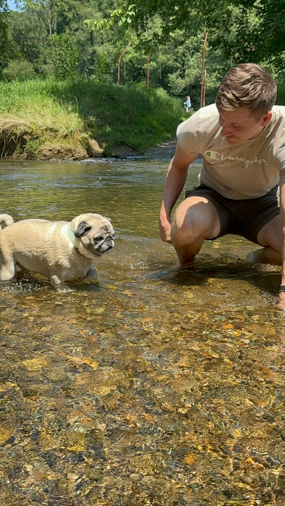

Nicholas Schrum
EDUCATION
Appalachian State University
Bachelor of Science in Community and Regional Planning and Sustainable Development
SKILLS
- Able to gather, interpret, and map geographic information effectively
- Strong Background in Urban Planning
- Data research, process, and analysis
- ArcGIS Pro, ENVI, Adobe Illustrator, QGIS and Geospatial
- Forklift certified
EXPERIENCE
Empower
- Coordinating site suitability analysis
- Responsible for coordinating with a team of engineers and project managers
- Adhering to local, state, and federal codes and legislation
Lowes Hardware
- Trained and supervised a team of three people
- Increased sales through interactions with vendors and contractors
- Provide information and assist local homeowners
